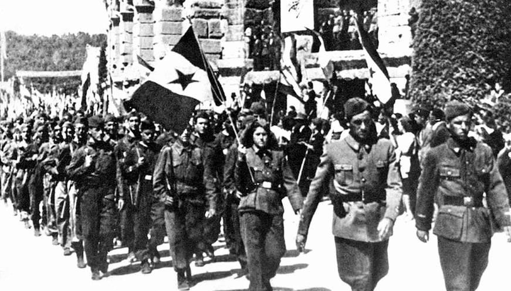
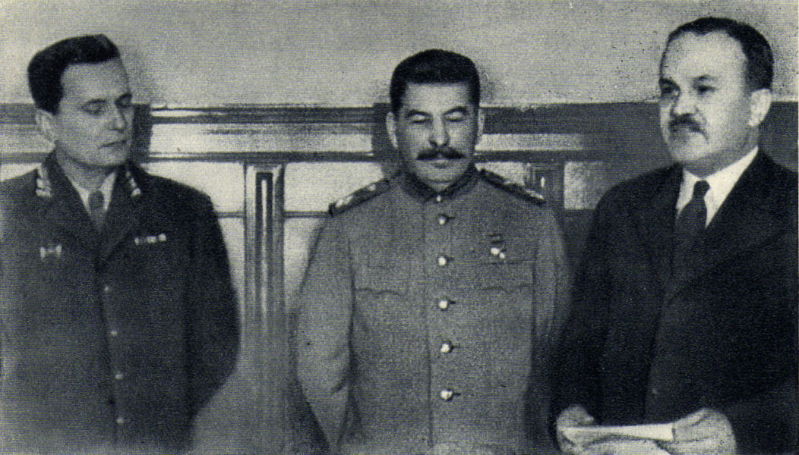
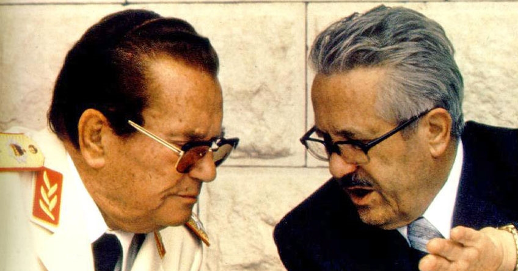
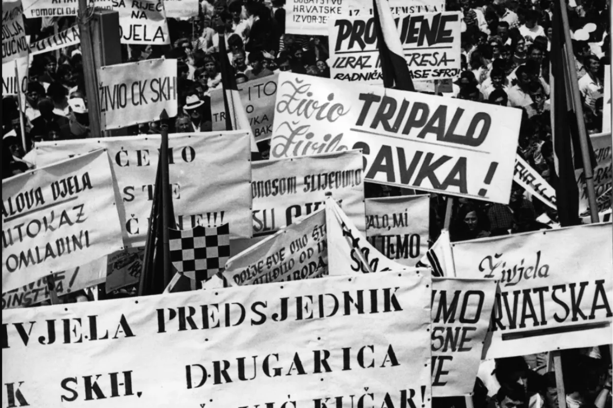
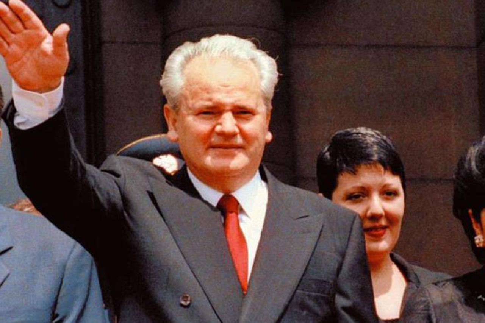

Uspostavljanje nove Jugoslavije

Odvajanje Jugoslavije i SSSR-a

Market Socijalizam i treći put

Hrvatsko proljeće

Umro je drug Tito
Uspon Miloševića i smrt bratstva i jedinstva

Klikni na događaj
Odaberi događaj s lijeve strane za detaljan opis.